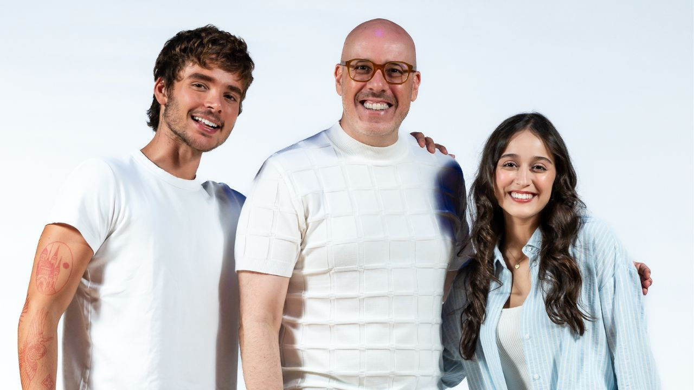

Versão brasileira de “Percy Jackson – O Ladrão de Raios: O Musical” anuncia protagonistas e estreia em São Paulo em 2026

João Lucas e Marianna Alexandre protagonizam a adaptação oficial do sucesso da Broadway e do West End, que chega ao Teatro Liberdade no segundo semestre
Fenômeno internacional dos palcos e dos livros, Percy Jackson – O Ladrão de Raios: O Musical ganha sua primeira versão oficial na América Latina e estreia em São Paulo, no segundo semestre de 2026, no Teatro Liberdade. A montagem brasileira é assinada pela Lab Cultural e acaba de anunciar seus protagonistas: João Lucas no papel de Percy Jackson e Marianna Alexandre como Annabeth.
Os atores foram apresentados oficialmente durante um painel da Lab Cultural na CCXP, em um encontro dedicado aos fãs da saga. Na ocasião, a produtora também revelou seu line-up de projetos para 2026 e 2027, que inclui Heathers – O Musical, Maysa – Aquilo que Não Te Contei e a peça O Código Da Vinci.
Ingressos em venda antecipada
O musical abriu um período exclusivo de 10 dias de vendas antecipadas, permitindo que os fãs garantam ingressos em primeira mão. As vendas seguem até 16 de dezembro, com ingressos limitados, pelo link:👉 https://bileto.sympla.com.br/event/114114
Uma aventura épica no palco
Baseado no best-seller de Rick Riordan, Percy Jackson – O Ladrão de Raios: O Musical acompanha a jornada de um adolescente que descobre ser filho do deus grego Poseidon. Lançado em um universo repleto de monstros, deuses e desafios mitológicos, Percy precisa impedir uma guerra entre os deuses do Olimpo enquanto aprende o verdadeiro significado de coragem, amizade e pertencimento.
Com trilha sonora rock contagiante, linguagem contemporânea e encenação repleta de efeitos visuais, o musical transforma a mitologia grega em uma experiência teatral vibrante e acessível para jovens, adultos e famílias. O sucesso da franquia foi ampliado recentemente com a série do Disney+, cuja segunda temporada estreia em dezembro de 2025, reforçando ainda mais o impacto cultural da obra.
O Brasil se destaca como a segunda maior base de fãs de Percy Jackson no mundo, o que evidencia o potencial de conexão da produção com o público nacional.
Sucesso internacional
O musical estreou em 2014, em uma produção off-Broadway, e chegou à Broadway em 2017, onde foi aclamado pela crítica e indicado ao Drama Desk Award. Em 2024, desembarcou no West End, em Londres, recebendo novos elogios e iniciando uma turnê internacional que consolidou o título como um dos mais queridos do teatro musical jovem contemporâneo.
Agora, o espetáculo chega ao Brasil em uma produção inédita e autorizada, com adaptação oficial em português.
“Poucas histórias conseguem unir de forma tão poderosa o imaginário dos livros, a emoção das telas e a energia do palco. Percy Jackson faz isso com verdade e sensibilidade, despertando o desejo por conhecimento, imaginação e pertencimento. Trazer essa jornada aos palcos brasileiros é celebrar o poder da arte de conectar gerações”, afirma José Toro, CEO da Lab Cultural.
Equipe criativa e realização
A montagem brasileira conta com direção-geral de Daniel Salve e promete uma produção à altura do sucesso internacional da franquia. Percy Jackson – O Ladrão de Raios: O Musical é apresentado pelo Ministério da Cultura e pela Bradesco Seguros, integrando o Circuito Cultural Bradesco Seguros.
Sobre os protagonistas
João Lucas | Percy Jackson
Cantor e compositor paulistano, João Lucas é um dos nomes em ascensão do pop romântico nacional. Iniciou sua trajetória musical ainda criança, passando pelo gospel até consolidar sua transição para o pop em 2023. Em 2024, lançou seu primeiro álbum de estúdio, João Lucas, com destaque para singles como Minuto de Saudade. Com milhões de streams, turnês nacionais e internacionais, e passagens por palcos como o Rock in Rio, o artista estreia agora no teatro musical em um papel icônico.
Marianna Alexandre | Annabeth
Atriz, cantora e dubladora, Marianna Alexandre atua há mais de 12 anos no meio artístico. Com formação sólida em teatro musical e passagem pelo New York Conservatory for Dramatic Arts, acumula trabalhos no teatro (A Noviça Rebelde, Mamma Mia, Rock in Rio 40 Anos – O Musical), na televisão (Gênesis e Reis, da RecordTV) e no cinema (Um Broto Legal e Mallandro – O Errado Que Deu Certo). Na dublagem, é conhecida por ser a voz da Wandinha Addams, além de trabalhos em produções da Disney, Netflix e grandes franquias internacionais. Soma mais de 14 milhões de seguidores nas redes sociais.
SERVIÇO
Percy Jackson – O Ladrão de Raios: O Musical
📅 Estreia: a partir de 10 de outubro de 2026⏱ Duração: 2 horas
📍 Local: Teatro Liberdade
📌 Rua São Joaquim, 129 – Liberdade – São Paulo
🎟 Ingressos: a partir de R$ 60 (vendas antecipadas até 16/12)🔗 Online: https://bileto.sympla.com.br/event/114114🎫 Bilheteria física: Teatro Liberdade
🕐 Funcionamento:• Terça a sábado: 13h às 19h• Domingos e feriados: apenas em dias de espetáculo, das 13h até o início da sessão
Equipe Criativa
Direção Geral: Daniel Salve
Direção Musical: Rafael Marão
Direção de Movimento e Coreografias: Vivien Fortes e Lucas Lorenzato
Versão Brasileira: Victor Muhlethaler
Direção de Produção: José Lima Toro e Robert Lima
Realização: Lab Cultural
📲 Redes oficiaisInstagram do musical: @PercyJacksonMusicalBrInstagram Lab Cultural: @lab.culturalSite oficial (em breve): www.percyjacksonomusical.com.br